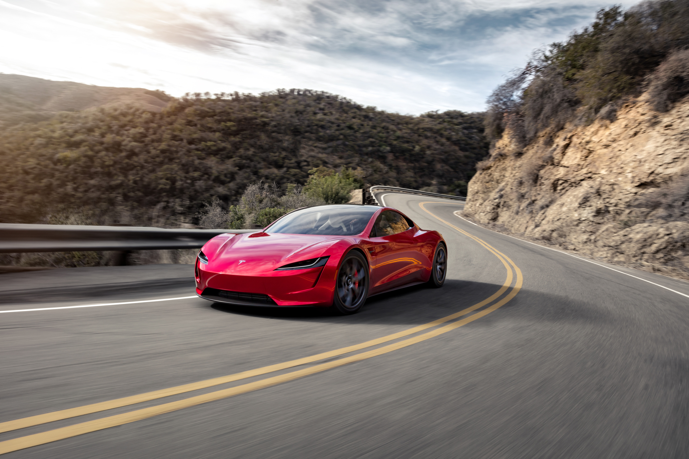

Mașini electrice
Alege dintr-o gamă largă de mașini electrice care îți pot satisface nevoile de mobilitate și durabilitate.
Avantajele mașinilor electrice sunt diverse: sunt curate, tăcute, eficiente și economic avantajoase. Cu o autonomie de până la 500 de kilometri, sunt perfecte pentru deplasările zilnice și pentru călătorii mai lungi.
Despre Tesla
Tesla este o companie americană de automobile electrice și energie, fondată în anul 2003 de către Elon Musk, Martin Eberhard, Marc Tarpenning, JB Straubel și Ian Wright. Numele companiei este inspirat de Nikola Tesla, un inventator și inginer electric de origine sârbă.
Tesla este cunoscută în principal pentru gama sa de vehicule electrice, care includ Model S, Model X, Model 3, Model Y și Roadster. Aceste mașini au devenit cunoscute pentru performanța lor impresionantă, designul lor inovator și capacitatea lor de a fi alimentate exclusiv de la prize electrice.
Pe lângă automobile, Tesla produce și panouri solare și sisteme de stocare a energiei, care sunt utilizate atât în scopuri comerciale, cât și în gospodăriile particulare. Compania are, de asemenea, o divizie de cercetare și dezvoltare, care lucrează la tehnologii noi și inovatoare în domeniul transportului și energiei.
Elon Musk, care este acum CEO-ul companiei, a devenit unul dintre cei mai cunoscuți și influenți oameni din industria tehnologică. Sub conducerea sa, Tesla a devenit una dintre cele mai valoroase companii din lume, cu o capitalizare de piață de peste 800 de miliarde de dolari.
Vezi modele